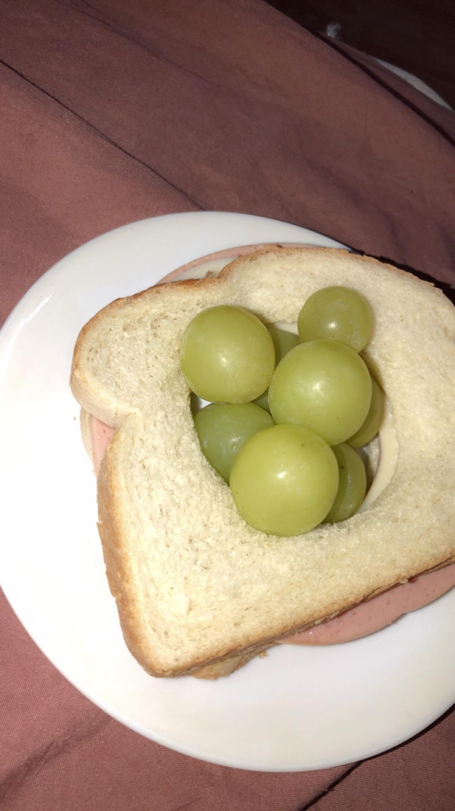

Grape Hole Sandwich Recipe
The grape hole sandwich is a simple but tasty recipe that involves placing seedless grapes in the middle of a slice of bread, and then adding cream cheese, honey, and optional walnuts. The grapes add a refreshing sweetness to the sandwich, while the cream cheese provides a creamy and tangy balance. The bread provides a sturdy base to hold everything together, making it a great snack or breakfast option.

Ingredients:
- 2 slices of bread
- 1/2 cup of seedless grapes
- 1 tbsp of cream cheese
- 1 tbsp of honey
- 1 tbsp of chopped walnuts (optional)
Instructions:
- Take one slice of bread and use a circular cookie cutter or a knife to cut out a small circle in the center of the bread, leaving a "hole" in the middle.
- Spread the cream cheese on the other slice of bread.
- Rinse and pat dry the grapes, then place them in the hole of the bread.
- Drizzle honey over the grapes, and sprinkle chopped walnuts on top if using.
- Place the cream cheese covered slice of bread on top of the grapes, pressing down gently to hold the sandwich together.
- Cut the sandwich in half and serve immediately.
This grape hole sandwich is a sweet and savory combination that is perfect for a quick breakfast or snack. You can also experiment with different types of bread, cream cheese flavors, or toppings to make it your own. Enjoy!
Back to home
Recipe generated by ChatGPT. Ideas from /r/StupidFood